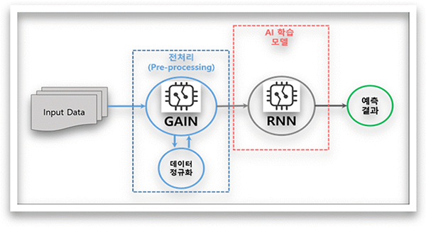
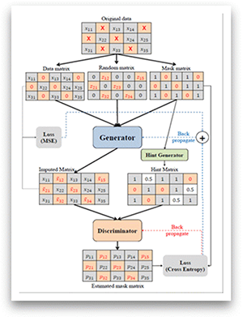
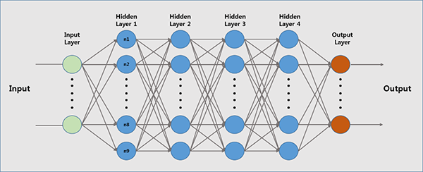
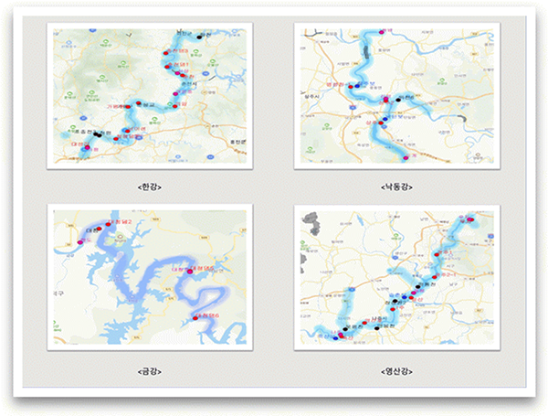
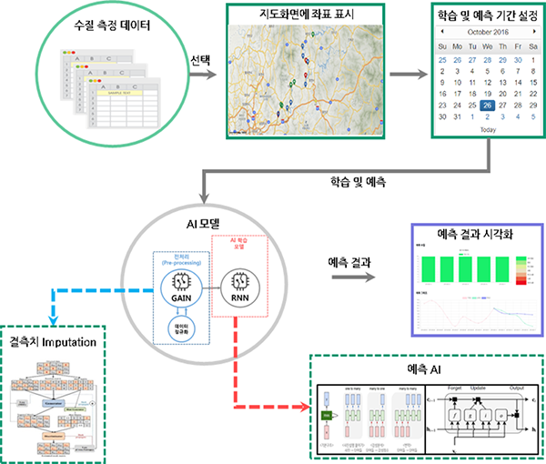
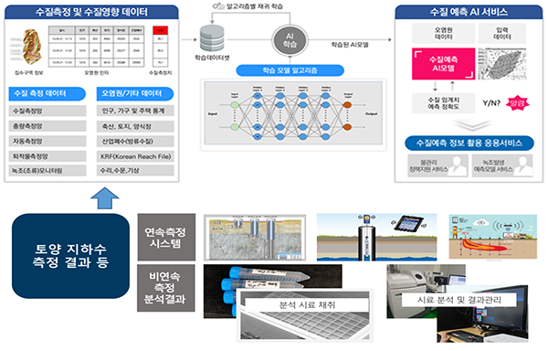

AI 학습 모델
AI 학습 모델에 활용할 Input Data를 GAIN알고리즘을 활용하여 Input Data의 결측치를 보간하는 전처리작업 후 RNN알고리즘 기반으로 개발된 AI 학습 모델에 적용하여 예측결과를 산출합니다.
AI 학습 모델의 흐름도

GAIN의 Architecture

RNN의 Architecture

AI 응용서비스
4대강 상수원보호구역중 한 개의 지점을 목표로 설정하고 상류(2~3개지점)를 함께 고려하여 한 시간 단위의 측정 데이터가 있는 자동측정망 자료를 기준으로 하여 시간 단위가 다른 측정망의 경우 한 시간 단위로 변환하여 사용하고, 과거 10일의 측정치를 가지고 미래 3~5일 후의 5개 측정항목을 예측합니다.
예측항목 : TOC(총 유기탄소량), Chl-a(클로로필-a), DO(용존 산소량), T-N(총 질소), T-P(총 인)
4대강 예측지점

AI 응용서비스 구성도

응용서비스 활용 시나리오
수질예측 AI모델을 활용한 지하수 측정결과와의 상관 관계 활용 시나리오
토양의 지하 침출수 등 토양오염 측정 결과와 하천 수질과의 관계성을 분석하기 위해 토양 지하수 관련 데이터를 수질예측 AI의 학습 데이터와 상관 분석을 적용하여, 지하수 오염이 하천의 수질 오염에 영향도를 분석하여 토양과 수질의 복합적인 활용을 연구할 수 있는 AI 모델 제공
